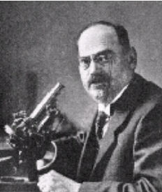

|  |
Edinger-Westphal's nucleus = the parasympathetic nucleus of the oculomotor nerve involves in light reflex. It is the site of damage in Argyll-Robertson's pupils.
The founder of comparative neuro-anatomy
Ludwig Edinger was born in Worms, on the Rhine, the eldest son of a
self-made, well-to-do textile manufacturer. When he was fourteen, his mother
arranged that he was given a microscope. He was fascinated by it, “I shall
never forget my ecstasy . . . Corkstoppers, flies, house-dust . . . nothing
was safe. He early learned the technique of embedding and mounting his
own preparations.
Edinger was a poor student at school, however, and on finishing the Gymnasium he flung his books over his garden wall, only to retrieve Homer, Horace and Sophocles.
At the University of Heidelberg he was bored by famous names like Friedrich Arnold in anatomy, whose theories he despised as pathetic and speculative. Bunsen, the old physicist, he decided not to listen to at all. When examined by Theodor Schwann, he forgot what he might have known of Schwann’s cell theory. The two teachers he let himself be influenced by, were Carl Gegenbauer (1826-1903), and the clinical neurologist Ernst Victor von Leyden (1832-1910), whose book on comparative anatomy he took along on his vacation. In 1876 he was conferred doctor of medicine at the University of Strassburg, being approbiert as a physician in 1877.
Already as a student Edinger had shown particular interest in the diseases of the nervous system. In 1877, one year after his dissertation, he became assistant to Adolf Kussmaul (1822-1902). Working at Strassburg, in the tower over the hospital gate, Edinger was particularly stimulated by Wilhelm Waldeyer-Hartz (1834-1921). Under his guidance, Edinger in 1877 published his first neurological paper, Die Endigung der Hautnerven bei Pterotrachea. At this time Edinger also saw much of Friedrich Daniel von Recklinghausen (1833-1910), got to know the work of Benedikt Stilling (1810-1879), and became a friend of Friedrich Leopold Goltz 1834-1902).
In 1879 Edinger commenced academic work in Giessen under Franz Riegel (1843-1904). At this time, Wilhelm Conrad Röntgen was the physicist there, still unknown.
In 1881, only twenty-six years old, Edinger was awarded his habilitation. He then spent a year travelling, visiting Berlin and Paris. Edinger then taught at the University of Giessen until 1883, when he came to Frankfurt am Main to practise neurology. Here, his small practice left him ample time for scientific work, which he greatly preferred. The microtome he had purchased was set up in his kitchen and his mother’s jelly glasses put to use for staining sections.
Besides his practical and scientific work, Edinger was a busy teacher. In the years from 1883 to 1885 he gave numerous, well attended lectures on the structure of the nervous system. Working on the human fetuses in the winter of 1883/1884 Edinger identified the spinal course of a fiber group, a forerunner of his later discovery, in 1889, of a “tractus spino-bulbo-thalamicus,” a pathway previously partly traced, in 1885, by Vladimir Mikhailovitsj Bekhterev (1857-1927). In 1885 appeared his famous text on the structure of the nervous system, an outgrowth of lectures given before the Frankfurt medical society.
Edinger’s attitude toward comparative neurology was summed up as follows: “Once the configuration of a given structure has been studied in detail in some forms, one can generally easily discover it in other forms even when it is more or less obscured by new additions.”
In 1885 Edinger became closely associated with Carl Weigert (1845-1904) who had just perfected his stain for the myelin sheath and built up and financed a neurological institute. For the next 20 years hardly a day would pass withous some contact between them, often at Edinger’s home, with discussions lasting well after midnight.
In 1903 he had his own reseach department at the Senckenbergisches Pathologisches Institut in Frankfurt. This became an independent neurological station, and in 1907 was moved to a new building with the most modern facilities.
Edinger became titular professor as early as in 1904. In 1914 he was made ordinarius in neurology at the recently founded Goethe University in Frankfurt and his institute was founded by the "Ludwig Edinger Stiftung". However, he did not live to see the clinical department attached to it.
Profound scientist, brilliant teacher, and able organizer, Edinger was also noted as a hypnotist. A fine artist, too, he would delight his students by simultaneously drawing the intricate structueres of the brain with his left hand while writing their legend with his right. His daughter, Dr. Tilly Edinger, relates that while sitting for his portrait at a table, dissecting a brain, he noticed that the artist, Lovis Corinth, was having difficulties in portraying his convolutions and forthwith came to the canvas and painted them himself. He was as devoted to art as he was to science and, like Freud, he always had on his desk some exquisite antique Grecian figurines.
Throughout his career Edinger pursued the relationship of structure with function as "to investigate brain anatomy alone is to pursue a sterile science". He wrote a book on the clinical application of neuro-anatomy in 1909. He was the first to describe the vertebral and dorsal spinocerebellar tract and to distinguish the paleoencephalon from the neo- encephalon and the paleo-cerebellum and neo-cerebellum. Although Gustave Roussy (1874-1948) and Joseph Jules Dejerine (1849-1917) are usually mentioned when thalamic pain is discussed, Edinger was the first to describe and verify it at autopsy some 15 years earlier.
Ludwig Edinger died of a coronary thrombosis post operatively. A study of his brain, which he often said he hoped someone would undertake, was made by Heinrich Riese (1864-1928) and Kurt Goldstein (1878-1965); extraordinarily well-developed occipital lobes as well as other unusual freatures were observed.
Ludwig Edinger published a large number of papers in Anatomischer Anzeiger,
Neurologisches Centralblatt, and in Virchows Archiv für pathologische
Anatomie und Physiologie und für klinische Medizin.
“To investigate brain anatomy alone [and not function] is to pursue a sterile science.”
“In my work two motives always impelled me. One was my wish to serve
clinical neurology as I came to know it under Leyden, Kussmaul and Erb.
The other was the attempt to understand better its anatomical substratum,
and impart of it what I could to my associates.”
Wilhelm Krücke, director of the Edinger Institute, at the centenary
jubilee.
Bibliography: